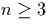
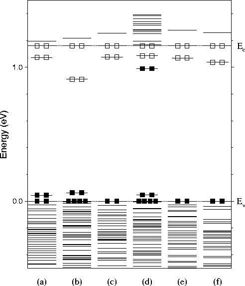

Next: The 5Oi Thermal Donor
Up: Thermal Donors in Si
Previous: Hydrogen passivation
It is possible to construct various other defect structures that act
as double donors, involving different numbers of oxygen atoms
(Oni, ). We have also modelled many of these for
comparison with the di-y-lid model, and to determine whether they
could be responsible for other members of the thermal donor family.
Figure 9.10:
The top Kohn-Sham eigenvalues for various alternative thermal
donor models, all in the +2 charge state. Black boxes denote filled
state, white boxes for empty states. The eigenvalues have been
arbitrarily scaled to the experimental band gap of 1.16eV. Structures
are 3Oi species (a) Snyder/Stavola, (b) Partially dissociated
trimer, 4Oi species (c) `Flanked square' model, (d) Di-square
model, (e) 5Oi STD analogue, and (f) 6Oi di-y-lid with dimer in
central Si-Si backbonds.
|  |
Chris Ewels
11/13/1997